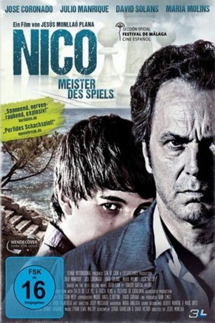

#2104 Nico - Meister des Spiels
 
 IMDB-Wertung: 6.2 / 10
IMDB-Wertung: 6.2 / 10  Metascore: 0
Metascore: 0 
Nico stammt aus einem wohlhabenden Elternhaus, interessiert sich vor allem für Schach und benimmt sich ansonsten überaus seltsam. Als der Familienhund tot aufgefunden wird, ist der Bogen für Nicos Eltern überspannt. Sie bitten den Psychologen Julio, sich dem Jungen anzunehmen. Julio versucht, über das Schachspiel Zugang zu Nico zu gewinnen, und muss nicht nur feststellen, dass dieser alles dafür tun würde, ein anstehendes Turnier zu gewinnen, sondern auch, dass die heile Welt von Nicos Eltern keineswegs so rosig ist.
Jahr: 2013
Dauer: 90 Minuten
FSK:
Land: Spanien Studio: Alfa PicturesTonspuren:
Untertitel:
Auflösung: 1080p (1920x1040) Größe: 3860 MB
Genre: Thriller
Regisseur: Jesús Monllaó
Drehbuch: Sergio Barrejón, Ignacio García-Valiño, David Victori
Soundtrack: Ethan Lewis Maltby
Darsteller:
 José Coronado als Carlos Albert
José Coronado als Carlos Albert- Julio Manrique als Julio Beltrán
- Abril García als Laura
- Paco González als Invitado
- Oriol Grau als
- Xavi Lite als
- Maria Molins als Coral Folch
- Míriam Monlleó als Elena, psicóloga
- Mercè Rovira als Patrícia Beltrán
- David Solans als Nico Albert
 Jack Taylor als Andrew Holsteter
Jack Taylor als Andrew Holsteter- Helena de la Torre als Diana
- Maria Boquera als Publico , uncredited
Datei: X:\2013(N-Z)\Nico - Meister des Spiels (2013, FSK, 1920x1040).mkv seit 05.10.2015
Festplatte: HD 2013(I-Z)-2014(A-Z)
 Es gibt insgesamt 133 Filme in der Gruppe '2013(N-Z)'
Es gibt insgesamt 133 Filme in der Gruppe '2013(N-Z)'